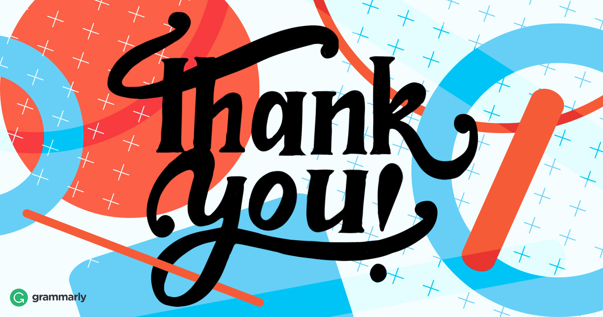

Tennis
Home Equipment Academies Gallery Contact
What is tennis?
Tennis is a racket sport that can be played individually against a single opponent (singles) or between two teams of two players each (doubles). Each player uses a tennis racket that is strung with
cord to strike a hollow rubber ball covered with felt over or around a net and into the opponent's court. The object of the game is to maneuver the ball in such a way that the opponent is not able to play a valid return. The player who is unable to return the ball will not gain a point, while the opposite player will.
Tennis comes from the French tenez, the plural imperative form of the verb tenir, to hold, meaning "hold!", "receive!" or "take!", an interjection used as a call from the server to his opponent to indicate that he is about to serve.In 1873, Londoner Major Walter Wingfield invented a game called he called Sphairistikè (Greek for "playing ball"). Played on an hourglass-shaped court, Wingfield's game created a sensation in Europe, the United States, and even China, and is the source from which tennis as we know it today eventually evolved.

Tennis is an Olympic sport and is played at all levels of society and at all ages. The sport can be played by anyone who can hold a racket, including wheelchair users. The modern game of tennis originated in Birmingham, England, in the late 19th century as lawn tennis.[1] It had close connections both to various field (lawn) games such as croquet and bowls as well as to the older racket sport today called real tennis. During most of the 19th century, in fact, the term tennis referred to real tennis, not lawn tennis. The net like structure of racket is the gutting.
Watch this video and learn more about tennis
So you have learned the basics about tennis
Now there are 4 major tennis tournaments(except for the minor ones)
Click on the below links to learn more about them
|
|
Now let's put your Knowledge to use
Here is a quiz you can answer according to what you have learned.
To attempt the quiz you will need to use google and sign into gmail account.
Here are some famous tennis players
Rafael "Rafa" Nadal Parera (Catalan: [rəf(ə)ˈɛl nəˈðal pəˈɾeɾə], Spanish: [rafaˈel naˈðal paˈɾeɾa];[2] born 3 June 1986) is a Spanish professional tennis player currently ranked world No. 2 in men's singles tennis by the Association of Tennis Professionals (ATP).[3]
Nadal has won 19 Grand Slam singles titles, the second-most in history for a male player, as well as a record 35 ATP Tour Masters 1000 titles, 21 ATP Tour 500 titles and the 2008 Olympic gold medal in singles.
.jpeg)
Novak Djokovic (Serbian: Новак Ђоковић, romanized: Novak Đoković, pronounced [nôʋaːk dʑôːkoʋitɕ] (About this soundlisten);[5] born 22 May 1987) is a Serbian professional tennis player who is currently ranked world No. 1 in men's singles tennis by the Association of Tennis Professionals (ATP).[6] Djokovic has won 17 Grand Slam singles titles, the third-most in history for a male player, five ATP Finals titles, 34 ATP Tour Masters 1000 titles, 14 ATP Tour 500 titles, and has held the No. 1 spot in the ATP rankings for over 280 weeks. In majors, he has won a record eight Australian Open titles, five Wimbledon titles, three US Open titles, and one French Open title.
Roger Federer (German pronunciation: [ˈrɔdʒər ˈfeːdərər]; born 8 August 1981) is a Swiss professional tennis player who is ranked world No. 4 in men's singles tennis by the Association of Tennis Professionals (ATP).
[3] He has won 20 Grand Slam singles titles—the most in history for a male player—and has held the world No. 1 spot in the ATP rankings for a record total of 310 weeks (including a record 237 consecutive weeks) and was the year-end No. 1 five times, including four consecutive. Federer, who turned professional in 1998, was continuously ranked in the top 10 from October 2002 to November 2016.

Felt: kind of cloth made by rolling and pressing wool or another suitable textile accompanied by the application of moisture or heat, which causes the constituent fibres to mat together to create a smooth surface.
Cord:thin, flexible string or rope made from several twisted strands.
Maneuver:a movement or series of moves requiring skill and care.